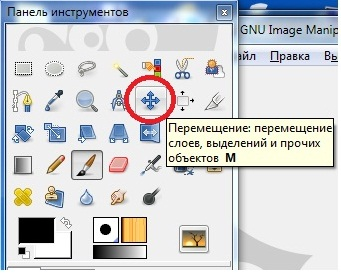

Инструмент Перемещение
Используется для смещения слоёв, выделений, контуров и направляющих, а также работает с текстовыми слоями.
Активация инструмента
Инструмент можно активировать несколькими способами:
* через меню изображения Инструменты → Преобразование → Перемещение.
* щелчком по значку инструмента на панели инструментов,
* либо используя клавишу быстрого доступа M.
* Инструмент перемещения автоматически активируется при создании направляющей.
Замечание
Удерживание нажатой клавиши Пробел временно меняет активный инструмент на Перемещение. При отпускании клавиши предыдущий инструмент снова становится активным. Это поведение работает в том случае, когда выбран параметр Переключаться в режим перемещения в Правка → Параметры → Окно изображения → При нажатии пробела.
Параметры
Обычно параметры инструмента отображаются в панели, присоединенной к панели инструментов, как только вы активируете его. Если их там нет, вы можете перейти к этой панели, выбрав в меню пункт Окна → Панели → Параметры инструмента.
Перемещение
Выбор этого параметра сохраняется после деактивации инструмента.
Переключатель инструмента (Shift)
Если инструмент работает со слоями
* Выбрать слой/направляющую: на изображении с несколькими слоями значок указателя мыши принимает вид перекрещенных стрелок, проходя над элементом текущего слоя. В этом случае вы можете щелкнуть и перетащить активный слой. Если же значок указателя имеет форму кисти с указующим пальцем, при щелчке инструмент выберет верхний из слоев, над которым находится указатель мыши, а последующее перетаскивание приведет к перемещению выбранного слоя. Если в изображении есть направляющая, она будет подсвечена красным цветом при прохождении указателя мыши над ней. Подсвеченную направляющую можно переместить.
* Переместить активный слой: только активный слой может быть перемещен. Этот вариант может быть полезен при работе со слоями, имеющими прозрачные области, когда можно нечаянно выбрать и переместить не тот слой.
Если инструмент работает с контурами
* Выбрать контур: используемый по умолчанию вариант. Значок указателя мыши при прохождении над видимым контуром принимает форму кисти с указующим пальцем. Этот контур можно щелкнуть и перетащить (на время перемещения контур становится активным).
* Переместить активный контур: можно перемещать только активный контур. Любой контур можно сделать активным в диалоге контуров.
Общее о работе инструмента перемещения
Перемещение выделения
Инструмент перемещения позволяет передвигать только рамку выделения. Для этого в режиме перемещения «Слой» при перетаскивании выделения необходимо удерживать нажатыми клавиши Ctrl+Alt. Если режимом перемещения является «Выделение», вы можете щелкнуть по любой точке холста для перемещения рамки выделения. Вы также можете использовать клавиши-стрелки для точного перемещения. При удерживании нажатой клавиши Shift шаг перемещения равен 25 точкам растра. При перемещении выделения этим инструментом центр выделения помечен крестиком. Этот крестик, как и границы выделения, может прилипать к направляющим или сетке, если включены параметры Вид → Прилипать к направляющим (или сетке): выравнивать выделения таким образом существенно проще.
Перемещение слоя
Режим перемещения должен быть установлен на «Слой». Тогда можно выбрать между перемещением активного слоя и, если есть много слоёв указать на слой или направляющую.
Перемещение сгруппированных слоев
Все сгруппированные (значком цепочки) слои будут перемещаться вне зависимости от того, какой из них в настоящее время активен.
Перемещение направляющей
При отрыве направляющей от линейки инструмент перемещения автоматически активизируется. Это не работает с другими инструментами, которых надо активизировать вручную. Когда курсор мышки проходит над направляющей, направляющая становится красной, и её можно передвигать обычным нажатием.
Перемещение контура
В диалоге параметров инструмента Контуры есть собственная функция перемещения активного контура, но можно использовать и инструмент перемещения, для чего режим перемещения должен быть переключен на «Контур». Заметьте, что если сразу после рисования контура переключиться на инструмент перемещения, контур станет невидимым, поэтому придется сначала сделать его видимым в диалоге контуров. Вы можете выбрать перемещаемый контур или просто переместить активный контур.
Перемещение текста
Каждый текстовый блок находится в своем собственном слое и потому может перемещаться как слой.